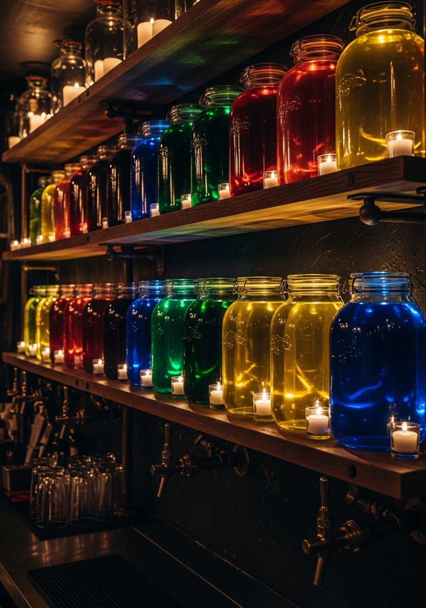

House Infusions
Twenty glass jars behind the bar. Served neat, chilled, or as flights.

After dark
A warm neighborhood tavern somewhere between Krakow, Prague, Vilnius, and Lviv, interpreted through modern American craft cocktail culture.
The feeling
Reclaimed oak, dark green tile, blackened steel, brass, amber lighting, candles, old maps, linen curtains, leather banquettes, and shelves of bottles and preserved fruit.
No wall of televisions. Conversation is the entertainment. The room glows, the tables fill slowly, and the bar smells faintly of oak, caraway, rye, smoke, and citrus peel.
The bar
Twenty glass jars behind the bar. Served neat, chilled, or as flights.

Dry, sparkling, oak-aged, berry, and spiced winter pours.
Polish, Czech, Lithuanian, Latvian, Ukrainian, Slovak, Romanian, and local craft.

Signature ritual

Shared plates
Order three, five, or eight plates. Rye bread, smoke, cultured dairy, pickles, mushrooms, herbs, and warm food that makes a second drink feel inevitable.
Fresh rye with whipped twarog, smoked butter, cultured butter, house pickles, house mustard.
Cheese, sausage, smoked fish, pickled vegetables, mushrooms, roasted garlic, fresh herbs.
Pierogi, kielbasa, hunter's stew in a mug, potato pancakes, smoked trout spread, beet tartare, roasted mushrooms, cabbage rolls, soft pretzels with beer mustard.
Honey cake, sernik, poppy seed cake, apple cake, ice cream with berry nalewka.
Sound
Indie folk, jazz, acoustic sets, modern Polish alternative, instrumental piano, and occasional live music.
Room
Heavy tables, leather banquettes, vintage travel posters, shelves of preserved fruit, and a hidden television at most.
Mark
A simple sheaf, a warm stone, copper foil, dark wood, honey light, and restraint.